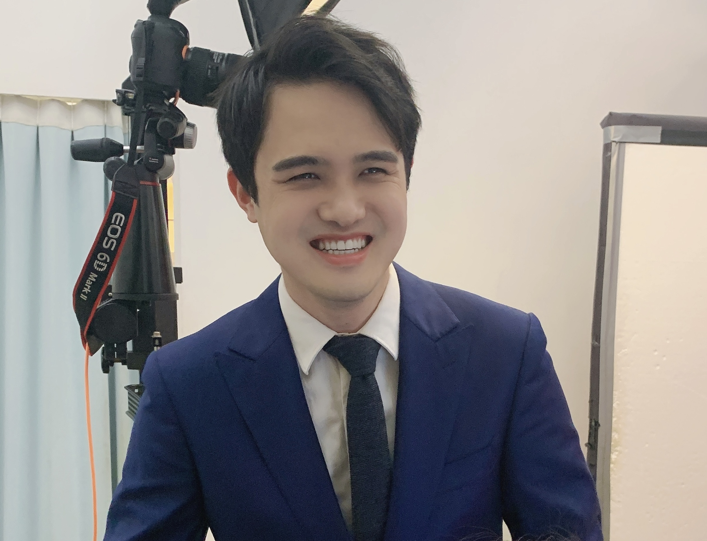

I'm a Ph.D. candidate at The University of Texas at Dallas, advised by Prof. Yapeng Tian and Prof. Yunhui Guo.
Before that, I received my master and bachelor degree from Chongqing University, China in 2021 and 2018 respectively.
My research interests lie in machine learning and computer vision, focusing on Audio-Visual Learning, Continual Learning, Multimodal Large Language Models, and Generative Models, etc.
[May 2025]: Join Amazon Prime Video as an Applied Scientist Intern.
[Sep. 2024]: Our paper on continual audio-visual sound separation got accepted at NeurIPS 2024.
[May 2024]: Start my internship at Tencent AI Lab Seattle.
[July 2023]: Two papers got accepted at ICCV 2023.
[Nov. 2022]: One paper got accepted at AAAI 2023.
[Aug. 2021]: Join Cognitive Computing Laboratory (CCL), Baidu Research as a research intern.
Towards Universal and Holistic Audio Generation from Video and Text
Weiguo Pian, Saksham Singh Kushwaha, Zhimin Chen, Shijian Deng, Kai Wang, Yunhui Guo, Yapeng Tian
In submission, under review
You Don't Have to Say Where to Edit! jLED – Joint Learning to Localize and Edit Source Code
Weiguo Pian‡, Yinghua Li‡, Haoye Tian, Tiezhu Sun, Yewei Song, Xunzhu Tang, Andrew Habib, Jacques Klein, Tegawendé F. Bissyandé
ACM Transactions on Software Engineering and Methodology (TOSEM), 2025
Modality-Inconsistent Continual Learning of Multimodal Large Language Models
Weiguo Pian, Shijian Deng, Shentong Mo, Yunhui Guo, Yapeng Tian
arXiv:2412.13050, 2024
Continual Audio-Visual Sound Separation
Weiguo Pian, Yiyang Nan, Shijian Deng, Shentong Mo, Yunhui Guo, Yapeng Tian
Annual Conference on Neural Information Processing Systems (NeurIPS), 2024
Audio-Visual Class-Incremental Learning
Weiguo Pian‡, Shentong Mo‡, Yunhui Guo, Yapeng Tian
IEEE/CVF International Conference on Computer Vision (ICCV), 2023
Class-Incremental Grouping Network for Continual Audio-Visual Learning
Shentong Mo‡, Weiguo Pian‡, Yapeng Tian
IEEE/CVF International Conference on Computer Vision (ICCV), 2023
MetaTPTrans: A Meta Learning Approach for Multilingual Code Representation Learning
Weiguo Pian, Hanyu Peng, Xunzhu Tang, Tiezhu Sun, Haoye Tian, Andrew Habib, Jacques Klein, Tegawendé F. Bissyandé
AAAI Conference on Artificial Intelligence (AAAI), 2023
Dynamic Re-weighting for Long-tailed Semi-supervised Learning
Hanyu Peng, Weiguo Pian, Mingming Sun, Ping Li
IEEE/CVF Winter Conference on Applications of Computer Vision (WACV), 2023
Predicting Patch Correctness Based on the Similarity of Failing Test Cases
Haoye Tian, Yinghua Li, Weiguo Pian, Abdoul Kader Kaboré, Kui Liu, Andrew Habib, Jacques Klein, Tegawendé F. Bissyandé
ACM Transactions on Software Engineering and Methodology (TOSEM), 2022